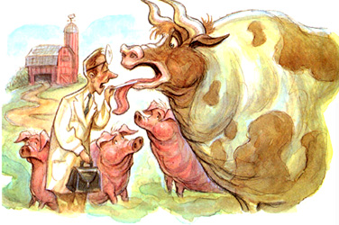

Issue # 175 - August/September 1999
Country Vet
A day in the life...
5:10 A.M. A series of piercing beeps interrupted what most certainly was a wonderful dream. Dazed, I leapt at once for alarm clock and phone before realizing that the offending dream wrecker was my pager. The number belonged to Bill Smithfield. He'd gone out to his pond to find three of his cows down.
"I'll be there in about 20 minutes," I managed.
Accidental poisonings of livestock and pets on the farm are frequent and not altogether surprising occurrences, given all of the potential toxins that are stored, distributed and discarded on the typical farmstead Pesticides, herbicides and farm chemicals are infamous for their potential toxicity to animals and people, but even the most organic farms may harbor an arsenal of insidious poisons (see "A Poisons Primer,").
In Part I of this two-part series, we'll take a close-tip look at on-the-farm poisonings caused by some unexpected toxins. Next issue, in Part 11, we'll cover some of the more common poisonings resulting from mishandling pesticides, herbicides and farm chemicals.
So read on and ride along for the first half of a very long day in the life of a country veterinarian.
As my truck pounded along the washboard road toward the Smithfield ranch, I dug out an old Clif Bar from the glove compartment. With no time for breakfast, it'd have to do. I washed it down with a few gulps of coffee from my large thermos.
Downed branches and a few stray tumbleweeds littered the roadway. The wind really must have been blowing the night before.
When I arrived, I found Bill out by his lake. A small herd of Black Angus milled around, but three cows were down on the ground, lifeless.
"Bill, it looks like I'm too late. I'm sorry about your cows."
I noticed that the wind was still blowing fairly hard.
"Do you usually have this layer of algae collected on this side of the lake where the cows drink?" I asked.
"No, this scum usually collects way over on the far side," Bill replied.
"Why, I'll bet your cows died from algae poisoning. You better run these others off."
Algae poisoning is caused by drinking water with high concentrations of toxic blue-green algae. Warm, sunny weather and still pond water, combined with a strong wind to push the algae bloom against the shore, conspire to put livestock, pets, wildlife and birds at risk for this fatal condition.
Toxins produced by the algae inflict massive liver damage, causing shock and death as soon as one hour after ingestion, and usually within 24 hours. Unfortunately, there is no effective treatment.
I advised Bill to use copper sulfate to reduce algae growth, and to keep the shore fenced off. He also had to bury the dead cows, since the toxin remains in the tissues and can affect humans similarly if consumed.
It was a rough start to what was shaping up to be a long day. Pouring out a second cup of strong java, I stirred up another dust trail on the road leaving the farm. I balanced the coffee on the dashboard and got on my cell phone to call ahead and postpone my early appointments. just then, my pager started vibrating like the tires of my truck on the washboard lane.
Sally Hansen was calling from her homestead about 20 miles up the canyon. Some of her young goats were acting strangely, staggering around and circling. It sounded like some kind of neurological problem. I told Sally I'd be there in about 45 minutes. As I clicked off the phone, I recalled that the Hansens live up in a part of the canyon beyond the power lines and so rely on photovoltaic cells for their electricity.
Skipping breakfast that morning was starting to create an uncomfortable gnawing in my stomach. I rummaged around behind my seat and found an uneaten peanut butter and jelly sandwich in my daughter's lunch box. I washed the late breakfast down with a swallow of coffee, which had somehow survived its journey on the dashboard.
Finally arriving at the Hansen place, I pulled up to the barn and immediately noticed a set of brand new solar panels on the roof. A new bank of storage batteries was being installed. The old batteries were on the ground outside the barn, in the same pen as the goats. Three kids were staggering around, circling and bleating anxiously. The nannies and billy were contentedly chewing on some alfalfa in a trough.
"Sally, how long have these batteries been out here?"
"We took them down three days ago. I guess the goats found a hole in the fence and came into the pen."
Lead poisoning is one of the most common on-the-farm intoxications. Cattle are most susceptible, but goats, sheep, dogs, pigs, horses and chickens can all be victims. Old batteries, grease, used motor oil and lead-based paint are the usual culprits.
Signs to watch for are muscle twitching, grinding of the teeth and snapping open of the eyelids, as well as a lack of coordination and circling. Fortunately, it is treatable if caught early.
I examined one of the kids and noted all of the classic symptoms of lead poisoning. The animal was disoriented and staring up toward the sky. I had a portable microscope with me, so I pulled some blood and found the telltale nucleated red blood cells so typical of lead poisoning. Normal mammalian red blood cells contain no nucleus.
I started all of the affected goats on the standard treatment for lead poisoning, including a specialized form of intravenous calcium and thiamine. They would require repeated injections for a week, but would probably recover.
Poisons can be absorbed from the gastrointestinal tract, the skin, the lungs or the eyes. Once in the body, they generally target the liver, since it's this organ's function to rid the bloodstream of toxins. Also, as seen in the goats, the central nervous system is exquisitely sensitive to toxins in the bloodstream.
Poisonings can be sudden and acute, as with algae poisoning, or more chronic. In the latter cases, astute livestock owners may notice gradual changes in their animals' conditions, such as unthriftiness or weight loss. Selenium or molybdenum toxicity, which result from abnormally high concentrations of these elements in the soil, are examples of slower-progressing poisonings.
Young animals are less able than mature animals to metabolize poisons into harmless by-products and are there to more susceptible to their effects.
Some species, such as the horse, are unable to vomit and thus may be more sensitive to ingested poisons.
As I recalled these principles from toxicology class, I was rousted back to reality by the insistent vibration of my pager
Tom Howelson had a couple of horses that were acting colicky. As I headed toward the alfalfa fields surrounding his ranch, it struck me as a little odd that two horses would be colicky simultaneously. I called Tom on my cell phone to get a head start on my detective work.
He mentioned that earlier in the morning both horses were acting very agitated and were drooling and occasionally rolling. One of the mares also had a red tinge to her urine.
As I talked to Tom, I grabbed the toxicology text I had jammed behind my seat. Guiding the steering wheel with my knees-cell phone clamped between ear and shoulder-I thumbed through the text, looking for causes of hematuria, or blood in the urine. I craved another cup of coffee, but could not reach my thermos rolling around on the floor of the cab.
"Tom, what kind of hay are you feeding?" I asked.
"Why, they just started on a fresh cut ting of alfalfa. There's nothing wrong with the hay."
When I arrived at the Howelson place, I saw the two horses in the corral, clearly uncomfortable. Both were drooling profusely, and one was striking at the ground with a front hoof. I sedated one of the pair in order to examine her. Right away, I noticed very reddened ulcerations in her mouth. Her heart rate was way up, around 80 beats per minute, indicating pain. Her gums were brick red, a sign of toxins in the blood.
I ran over to the hay bin and grabbed a flake. Sure enough, a swarm of blister beetles was crawling through the alfalfa.
Canthardin poisoning occurs when blister beetles are ingested by horses feeding on freshly cut alfalfa hay, usually from the central and southwestern United States. Canthardin is a potent toxin that causes abdominal pain, sores inside the mouth, kidney damage and occasionally shock. Symptoms include colic, drooling and blood in the urine. If left untreated, horses often die within 48 hours of exposure.
There is no antidote, so treatment is mostly supportive. I ministered to both horses with mineral oil down a stomach tube, intravenous fluids containing calcium and a pain medication. I instructed Tom to monitor the IV bags until I could return later.
"How do you think they'll do, doc?"
"I'm glad you called when you did. With early intervention they have a good chance to recover," I replied.
"Will you join us for some dinner?" Tom asked.
This was my favorite part of the job, and the grumbling in my stomach had gotten worse. just as I was about to agree, my cell phone interrupted me with its clattering pseudo-rings. It was Helga Volkman calling about her sick pigs. I told her I'd be right over.
When I got to the Volkmans' place, I observed several pigs milling about aimlessly within the corral. One actually ran into a corral post. They had a dazed look about them, apparently oblivious to their surroundings. The rest of the pigs appeared normal.
"Helga, when did you first notice these pigs acting like this?"
"I fed them their swill earlier this morning and about an hour ago I saw these three acting strangely."
I noticed one of the affected pigs had fallen over and appeared to have muscle twitches along his haunches. His head was moving jerkily back and forth.
"Anything new in the swill, Helga?"
"Not really, just the usual kitchen slop," she replied.
I went ahead and restrained one of the sick pigs and was able to obtain a blood sample. Although I couldn't analyze it there and then, it might supply some postmortem clues that would help the rest of the pigs.
I examined the swill in the feed bucket and detected a strong odor. Reluctantly, I dipped in a finger and took the smallest taste.
"Helga, this will is pure salt!"
"Well, what do you expect when you've been making pickles all day!"
Salt poisoning occurs when cattle, sheep, horses or pigs ingest highly salted water or are deprived of water while feeding on salt blocks. Blood concentrations of the sodium ion reach toxic concentrations, causing damage to neurological and digestive systems. Diarrhea, blindness and weakness are all signs.
The treatment is straightforward: water. I gave all three pigs a large dose via a stomach tube and got rid of the remnants of the salty brine in their feed buckets. I informed Helga that only about half of animals stricken with salt poisoning survive, regardless of treatment heroics.
Helga graciously thanked me for my efforts. I told her I would check back later, and to be careful of what's in the swill. just then, I noticed that the Caulfields had left an urgent message on my voice mail. Their border collie, Sam, had collapsed and could not get up.
Lunch clearly was not on the menu for today. As I started to head toward my truck, Helga called out, "Here, take a jar of last year's pickles with you."
How appropriate, I thought, as I voraciously wrestled off the lid. I careened out of Helga's driveway toward my next stop, careful not to spill any brine as I clutched the open jar between my knees.
A POISON PRIMER: Source and Symptoms
|
 |
|
|